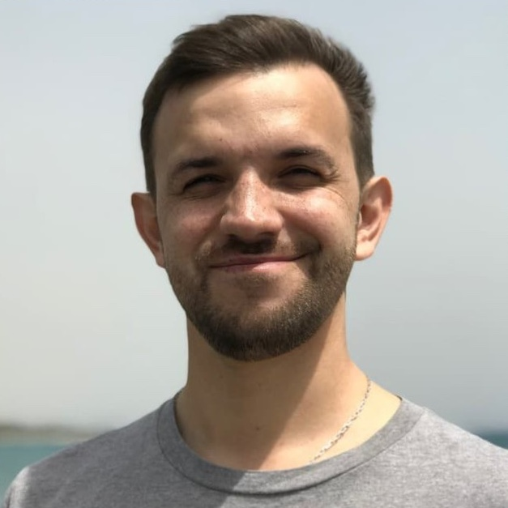

Andrey Subbota
Email: subbota@gmail.com | Phone: +46 791 014909 | Location: Stockholm, Sweden
Email: subbota@gmail.com | Phone: +46 791 014909 | Location: Stockholm, Sweden
Software engineer with over 15 years of experience in Ruby, including Ruby on Rails, and backend development in general. Focused on building scalable applications, improving system performance, and mentoring developers. Interested in clean code, best practices, and maintainable solutions.
Worked on improving system architecture by identifying key bottlenecks and proposing scalable solutions. Provided technical mentorship to engineers and supported cross-team collaboration by sharing knowledge and best practices. Suggested structural changes to enhance team ownership and workflow efficiency.
Maintained and improved internal services by refactoring legacy code, optimizing performance, and ensuring system stability. Focused on Ruby development, troubleshooting existing functionality, and implementing incremental enhancements to improve efficiency and maintainability.
Before Servers.com, I worked as a Backend Engineer and Technical Lead in various companies, focusing on Ruby development, system architecture, and infrastructure improvements. I have experience leading teams, optimizing performance, and refactoring legacy systems. My background includes mentoring developers, implementing scalable solutions, and working with diverse backend technologies.
BSc in Mathematics (2006)
Thesis: Application on Metric Model in Text Processing